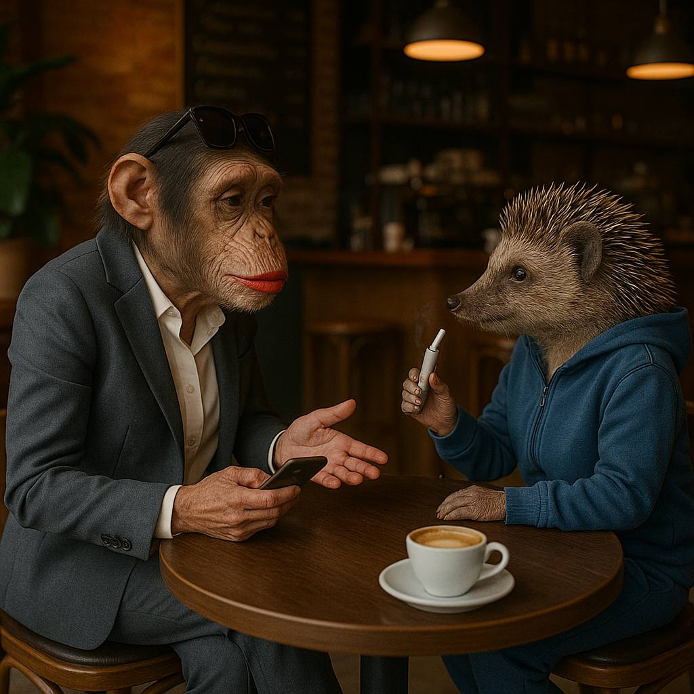

Ранкове сонце світило у вікно і в запухші очі Алєговни. Згадувати свою емоційну поєздку до Льоні вона не хотіла… а треба було б, бо після того, як вона предложила Лєоніду випить на брудершафт, медсестра - крокоділіха вивела її з палати.
Жанна лежала в своїй білоснєжній постєлі і не хотіла нікуди іти в цей виходний. Пройшло 2 дня після поїздки в лікарню і Льоня їй не звонив. Це опрєдєльонно наводило на мисль, шо вже і не подзвонить.
Пікнув тєлєграм:
«Жанночка, буду через 20 мінут і йдем на коХфе» - написала Лючіта. Жанна була рада її побачить після її трьох місяців служби. Лючіту недавно демобілізували з висновком ВЛК «психотичний розлад».
Під подʼєздом припаркувався бенве ай3 чорно-голубого цвєта, з машини було чутно «хуууууба-буба» і Алєговна поняла, що демобілізували Лючіту не просто так …
В кавʼярні третьої волни Лючіта замовила собі хенд брю. МаккоХфе в меню не було і Алєговна трохи розтєрялась.
За пів години Жанна встигла розказати все, шо проізошло з нею за цих останніх пару місяців. Лючіта докурювала пʼятий айкос і мовчала. А в кінці расказа Жанна грустно запитала:
- Лючіта, ти така опитна женщіна. Дай совєт - як мені поступить в цій сітуациі з Льоньою ?
Лючіта поклала на стіл розряжений айкос і впевнено промовила:
- Забий хєр.
В цей момєнт у вайбер Жанночці прийшло сообщєніє:
«Я всьоравно тебе люблю. Твій Лєонід».